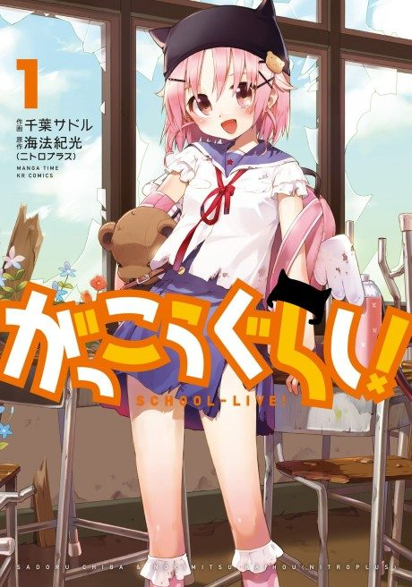

SCHOOL-LIVE!
がっこうぐらし!
After the anime, read the manga from Chapter 30.
7.4AniList score
—Animeter, no votes yet
12episodes
Anime finished. Where does the manga pick up?
Start at Chapter30
The anime ends around chapter 33 (volume 6) but changes the climax, so reading from chapter 30 is recommended to see the manga's version of the finale. The story continues after that.
13378 end
Season 1Start reading here